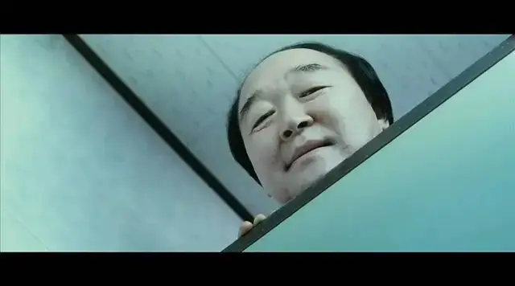
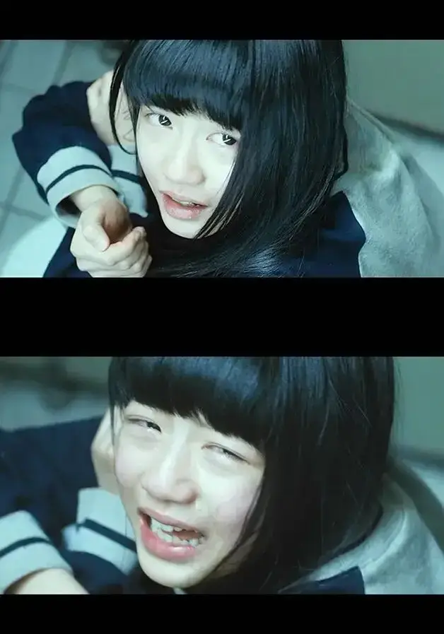

id="js_content" style="">

作者：二斤
最近鲍某明强奸养女案在网络上刷屏，我一个不怎么看新闻的人也隔绝不了这潮水般的互联网信息。
相关案情《南风窗》已经做了很完善的报道，《澎湃》在跟随的报道里也补充了很多观点，众多公众号也没有落下，纷纷发表相关文章。
瞬时间讨论热度也在微博冲顶。
在海量信息的冲刷下，我的脑海里逐渐构建了一个框架，在这个名为娈童的框架之上放着两块砖头。
一块名叫阶级，一块名叫权力。
阶级差异是这个令人愤恨的娈童案件里绕不开的石头，鲍某明贵为上市公司老总、又为某重点大学外聘研究员，可谓事业与学术两开花。
从互联网上查找到的履历上来看，鲍某明：
1994年毕业于天津大学获工学学士学位，1999年获天津大学管理科学与工程专业硕士学位；
2001年于美国桥港大学获得计算机硕士学位；具有中国律师资格与美国联邦最高法院出庭律师资格 。
1996年起从事律师工作，先后在京津地区律师事务所任合伙人，驻美国纽约和加州工作近十年，曾任美国思科、美国新闻集团、香港南华集团等跨国企业资深法律顾问。
此外，鲍毓明为教育部认证高层次海外留学人才、国家外国专家局认证外国专家、全国十佳总法律顾问，兼有纽约长岛商学院讲师、西南政法大学兼职研究员、中国行为法学会客座教授等教研经历。
从上述材料来看，鲍某明个人经历十分光鲜，荣誉称号横跨企学二界。
从1996年就开始从事律师工作，对于法律规制自然不会生疏，而且担任各大企业法律顾问，与人交流，熟谋思计也不会差。
在众多企业工作的经历自然会给他带来很多人脉，而靓丽的求学过程也为他本身的地位起了加持。
按现在的话来说，这个人属于精英阶层，有学识、有人脉、有金钱。
反观女童家庭，从仅有的网络资料来看，自然不会是显贵。
南风窗在知乎的报道下，有条留言点赞进了前三，内容是“不明白母亲为什么要把女儿完全托付给一个陌生男子。”
网友愤恨的情绪自然可以理解，但是要知道从阶级上，鲍某明已经对于女孩家庭构成了压迫。
所以当他对女孩母亲提出收养要求并且许诺给予她更好的生活条件，我想这个平日里唯唯诺诺的母亲并没有多少资本可以让其回旋。
这种低头的心理来自于自我的底气不足，试想妈妈带着女儿可以奔向更好的生活，甚至达到阶级跨越。
而那个施恩的人又“对她们关怀备至，还有律师、名校毕业生的身份”，一个母亲是很难拒绝的。
正是阶级的力量带走了这个名叫星星的女孩，也把她带向无尽苦痛的深渊。
奥斯卡王尔德说过，“所有事情关乎于性，而性关乎于权力。”
这句话的另一种说法就是，所有的性侵都是起于权力上一方对于另一方的压制。
一个瘦弱甚至有些营养不良的女孩，一个一米九两百斤的企业高管，在二者的权力对比上，自然是天与地的区别。
人没有哪个人是从石头缝里蹦出来的，都是从幼童稚子一点点成长起来的。
回想在成长的记忆里，任何一个来自大人的命令对于我们来说，反抗都是无比艰难的。
孩子与大人之间本身就隔了道名叫威权的高墙，孩子翻不过去，但大人则可以肆无忌惮。
所以这个叫星星的女孩，面对鲍某明并没有多少可以回旋的余地。
根据南风窗的报道，“当时只有70多斤的星星，与将近200斤的鲍某明，根本无法抗衡。
她用尽力气，‘爸爸’却像铁桶一样箍住她，摸她。‘穿衣服睡觉是不健康的’，鲍某明一边说，一边强行脱掉星星的衣服，侵犯了她。”
我们可以想象之前的生活已经磨掉了这个女孩的自信，而现在鲍某明又开始摧毁她的自尊，仅为自己变态的私欲。
在昨天（4月13日），鲍某明回应了事件，他说，星星是“忘恩负义”，接着又扯“两人是相爱的，已经买了结婚戒指，等她一长大就娶她。”
并且附以聊天截图以图证明。
我们且不说聊天截图是否存在伪造的可能，光这令人作呕的自恋就让人起生理厌恶。
但是这条信息对于一些人是起作用的，每当这个时候便有些伪装客观但骨子里印着偏见的人跳了出来，借此表达自己的观点，“这个女孩是不是图钱没图到，所以诬陷养父呢？”
这看似客观的反问，实际上幻化为，掐死受害者的第二双手。
在邻国日本，据调查百分之87受过侵害的女性并不会选择报案，因为承受不住社会对她们造成的第二次伤害。
两年前，刘某东性侵案中，受害女生为了维护自己的名誉，甚至宣布要将得到的赔偿全部捐出，以证清白，所应对的就是“价钱没谈拢”的恶言恶语。
在我们看似女权繁荣壮大的表面下，其实一条恶毒的流言便可以带动社会情绪将其摧毁，也正是这种令人作呕的猜忌，让更多受到伤害的女孩敢怒不敢言。
台湾作家林奕含在遗作《房思琪的乐园》里曾经写过，因为无法解释“自己受到的伤害，所以只好原谅那个性侵她的男子”。
而原谅的手段就是，假装“爱上他”。
通过“爱上他”把自己所遭遇的苦痛合理化，好来求得自己心灵上的安慰。
但这种饮鸩止渴式的欺骗并不会带来长久的安宁，痛苦继续折磨着林奕含，这个作家也在2017年4月27日在家自缢身亡。
我们不可以让悲剧重演，我们更不可以让这个受到伤害的女孩子感受到孤独。
想到自己以后会做一个孩子的父亲，如果自己的孩子遭受到这样的恶行，遭受着这样的流言，我是万万不能接受的。
在我们传统的教育里，经常教导大家，看事情要辩证的看待，有好的一面就有坏的一面。
但是对于这个现在依然还恬不知耻的禽兽，我想我们需要收起那虚伪的客观，站在这个女孩子的身旁，告诉她，“不要害怕，叔叔阿姨，哥哥姐姐，爷爷奶奶们会与你站在一起。”
（正文完）
后记
在复述鲍某明性侵星星的过程中，我没有选择复制粘贴，而是一个字一个字的敲打下来，那种突然袭来的愤怒与悲伤几乎将我击垮。
役所广司在三池崇史的《十三刺客》里，当他看到昏君将家臣妻女砍成人彘的时候，曾经说过，“看到如此恶行，鄙人的手会不住的发抖。”
这是他在战斗前的反应，已经控制不住想一刀斩了那个魔鬼。
在写这篇文章的时候，我的手便在不住的发抖。

相似推荐
▼
me too , 我也是罪人
这是多大的勇气，导演竟将自己被诱奸的经历拍成了电影
-END-
这里没有挑逗你眼目情欲的小鲜肉
也没有挑动你肉体情欲的段子
更没有膨胀你今生骄傲的鸡血
我们只在乎那些最质朴真诚的作品
在那里我们才能恢复真正的想象力
我们也坚信这才是我们真正需要的

ID:Six_hundred_hits
长按二维码，一键关注
【六百击】
电影评论
尽情分享朋友圈

微信二维码打赏通道